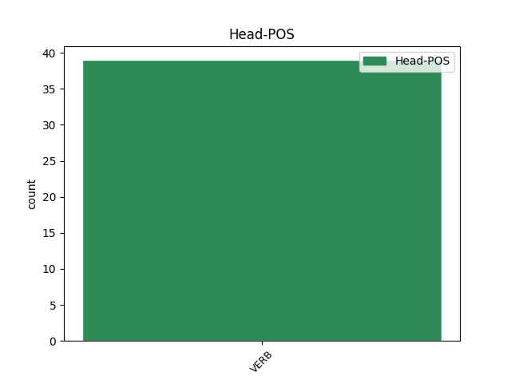

Distribution of features within this leaf



Agreement Rules sorted by frequency.
- When the dependent token is the complement for auxiliary(comp:aux) of the head token, and the head token is AUX
1 Սերժ _ _ _ _ 0 _ _ _
2 Սարգսյանի _ _ _ _ 0 _ _ _
3 պայմանական _ _ _ _ 0 _ _ _
4 « _ _ _ _ 0 _ _ _
5 տեխնոկրատների _ _ _ _ 0 _ _ _
6 » _ _ _ _ 0 _ _ _
7 թիմը _ _ _ _ 0 _ _ _
8 ՀՀԿ-ում _ _ _ _ 0 _ _ _
9 պետք _ _ _ _ 0 _ _ _
10 է եմ AUX _ Aspect=Imp|Mood=Ind|Number=Sing|Person=3|Polarity=Pos|Tense=Pres|VerbForm=Fin 0 _ _ _
11 որպես _ _ _ _ 0 _ _ _
12 դաշնակից _ _ _ _ 0 _ _ _
13 ընտրի ընտրել VERB _ Aspect=Prosp|Mood=Sub|Number=Sing|Person=3|Polarity=Pos|Subcat=Tran|Tense=Pres|VerbForm=Fin|Voice=Act 10 comp:aux _ LTranslit=ëntrel|Translit=ëntri
14 կամ _ _ _ _ 0 _ _ _
15 Կարապետյանի _ _ _ _ 0 _ _ _
16 նոր _ _ _ _ 0 _ _ _
17 թիմին _ _ _ _ 0 _ _ _
18 , _ _ _ _ 0 _ _ _
19 կամ _ _ _ _ 0 _ _ _
20 էլ _ _ _ _ 0 _ _ _
21 հին _ _ _ _ 0 _ _ _
22 ընկեր _ _ _ _ 0 _ _ _
23 օլիգարխներին _ _ _ _ 0 _ _ _
24 : _ _ _ _ 0 _ _ _
1 Ինչ _ _ _ _ 0 _ _ _
2 վերաբերում _ _ _ _ 0 _ _ _
3 է եմ AUX _ Aspect=Imp|Mood=Ind|Number=Sing|Person=3|Polarity=Pos|Tense=Pres|VerbForm=Fin 12 mod _ LTranslit=em|Translit=ē
4 Բոբ _ _ _ _ 0 _ _ _
5 Դիլանին _ _ _ _ 0 _ _ _
6 , _ _ _ _ 0 _ _ _
7 կարծում _ _ _ _ 0 _ _ _
8 եմ _ _ _ _ 0 _ _ _
9 , _ _ _ _ 0 _ _ _
10 նա _ _ _ _ 0 _ _ _
11 արժանի _ _ _ _ 0 _ _ _
12 է եմ AUX _ Aspect=Imp|Mood=Ind|Number=Sing|Person=3|Polarity=Pos|Tense=Pres|VerbForm=Fin 0 _ _ _
13 այս _ _ _ _ 0 _ _ _
14 մրցանակին _ _ _ _ 0 _ _ _
15 նախ _ _ _ _ 0 _ _ _
16 երգի _ _ _ _ 0 _ _ _
17 խոսքերի _ _ _ _ 0 _ _ _
18 կարգավիճակը _ _ _ _ 0 _ _ _
19 երաժշտության _ _ _ _ 0 _ _ _
20 պարզունակ _ _ _ _ 0 _ _ _
21 կցորդից _ _ _ _ 0 _ _ _
22 պոեզիայի _ _ _ _ 0 _ _ _
23 մակարդակի _ _ _ _ 0 _ _ _
24 բարձրացնելու _ _ _ _ 0 _ _ _
25 համար _ _ _ _ 0 _ _ _
26 ։ _ _ _ _ 0 _ _ _
1 Արտահանման _ _ _ _ 0 _ _ _
2 մեծ _ _ _ _ 0 _ _ _
3 տեմպերն _ _ _ _ 0 _ _ _
4 ապահովվել _ _ _ _ 0 _ _ _
5 են եմ AUX _ Aspect=Imp|Mood=Ind|Number=Plur|Person=3|Polarity=Pos|Tense=Pres|VerbForm=Fin 0 _ _ _
6 առաջին _ _ _ _ 0 _ _ _
7 հերթին _ _ _ _ 0 _ _ _
8 հանքահումքային _ _ _ _ 0 _ _ _
9 ոլորտի _ _ _ _ 0 _ _ _
10 հաշվին _ _ _ _ 0 _ _ _
11 ՝ _ _ _ _ 0 _ _ _
12 60 _ _ _ _ 0 _ _ _
13 մլն _ _ _ _ 0 _ _ _
14 218.6 _ _ _ _ 0 _ _ _
15 հազար _ _ _ _ 0 _ _ _
16 դոլարի _ _ _ _ 0 _ _ _
17 հանքահումքային _ _ _ _ 0 _ _ _
18 արտադրանք _ _ _ _ 0 _ _ _
19 է եմ AUX _ Aspect=Imp|Mood=Ind|Number=Sing|Person=3|Polarity=Pos|Tense=Pres|VerbForm=Fin 5 dislocated _ LTranslit=em|Translit=ē
20 հունվարին _ _ _ _ 0 _ _ _
21 արտահանվել _ _ _ _ 0 _ _ _
22 երկրից _ _ _ _ 0 _ _ _
23 : _ _ _ _ 0 _ _ _
1 Փողը _ _ _ _ 0 _ _ _
2 հավաքում _ _ _ _ 0 _ _ _
3 , _ _ _ _ 0 _ _ _
4 հավաքում _ _ _ _ 0 _ _ _
5 էի _ _ _ _ 0 _ _ _
6 , _ _ _ _ 0 _ _ _
7 հավաքվում _ _ _ _ 0 _ _ _
8 էր _ _ _ _ 0 _ _ _
9 ՝ _ _ _ _ 0 _ _ _
10 մտածում _ _ _ _ 0 _ _ _
11 էի _ _ _ _ 0 _ _ _
12 ՝ _ _ _ _ 0 _ _ _
13 ավել _ _ _ _ 0 _ _ _
14 գումար _ _ _ _ 0 _ _ _
15 է _ _ _ _ 0 _ _ _
16 , _ _ _ _ 0 _ _ _
17 հիվանդ _ _ _ _ 0 _ _ _
18 երեխա _ _ _ _ 0 _ _ _
19 է _ _ _ _ 0 _ _ _
20 , _ _ _ _ 0 _ _ _
21 չգիտեմ գիտել VERB _ Aspect=Imp|Mood=Ind|Number=Sing|Person=1|Polarity=Neg|Subcat=Tran|Tense=Pres|VerbForm=Fin|Voice=Act 23 discourse _ LTranslit=gitel|Translit=čgitem
22 ինչ _ _ _ _ 0 _ _ _
23 է եմ AUX _ Aspect=Imp|Mood=Ind|Number=Sing|Person=3|Polarity=Pos|Tense=Pres|VerbForm=Fin 0 _ _ _
24 , _ _ _ _ 0 _ _ _
25 դրա _ _ _ _ 0 _ _ _
26 համար _ _ _ _ 0 _ _ _
27 է _ _ _ _ 0 _ _ _
28 ... _ _ _ _ 0 _ _ _
29 : _ _ _ _ 0 _ _ _
Disagree Examples:
1 Իգնատի _ _ _ _ 0 _ _ _
2 սև _ _ _ _ 0 _ _ _
3 թշնամանքը _ _ _ _ 0 _ _ _
4 , _ _ _ _ 0 _ _ _
5 ոչ _ _ _ _ 0 _ _ _
6 , _ _ _ _ 0 _ _ _
7 նրանց _ _ _ _ 0 _ _ _
8 թույլ _ _ _ _ 0 _ _ _
9 չէր եմ AUX _ Aspect=Imp|Mood=Ind|Number=Sing|Person=3|Polarity=Neg|Tense=Imp|VerbForm=Fin 0 _ _ _
10 տա տալ VERB _ Aspect=Prosp|Mood=Sub|Number=Sing|Person=3|Polarity=Pos|Subcat=Tran|Tense=Pres|VerbForm=Fin|Voice=Act 9 comp:aux _ LTranslit=tal|Translit=ta
11 ձեռքները _ _ _ _ 0 _ _ _
12 ունքներին _ _ _ _ 0 _ _ _
13 դնել _ _ _ _ 0 _ _ _
14 ու _ _ _ _ 0 _ _ _
15 մորս _ _ _ _ 0 _ _ _
16 հետ _ _ _ _ 0 _ _ _
17 տնավարի _ _ _ _ 0 _ _ _
18 կատակել _ _ _ _ 0 _ _ _
19 . _ _ _ _ 0 _ _ _
20 « _ _ _ _ 0 _ _ _
21 Տանտիկին _ _ _ _ 0 _ _ _
22 , _ _ _ _ 0 _ _ _
23 հեռու _ _ _ _ 0 _ _ _
24 քաղաքներից _ _ _ _ 0 _ _ _
25 էս _ _ _ _ 0 _ _ _
26 ինչ _ _ _ _ 0 _ _ _
27 անծանոթ _ _ _ _ 0 _ _ _
28 հյուր _ _ _ _ 0 _ _ _
29 ես _ _ _ _ 0 _ _ _
30 ընդունել _ _ _ _ 0 _ _ _
31 ու _ _ _ _ 0 _ _ _
32 մեզանից _ _ _ _ 0 _ _ _
33 թաքուն _ _ _ _ 0 _ _ _
34 ես _ _ _ _ 0 _ _ _
35 պահում _ _ _ _ 0 _ _ _
36 » _ _ _ _ 0 _ _ _
37 ։ _ _ _ _ 0 _ _ _
1 Մեր _ _ _ _ 0 _ _ _
2 5-րդ _ _ _ _ 0 _ _ _
3 փողոցը _ _ _ _ 0 _ _ _
4 քանդված _ _ _ _ 0 _ _ _
5 էր _ _ _ _ 0 _ _ _
6 ( _ _ _ _ 0 _ _ _
7 նոր _ _ _ _ 0 _ _ _
8 գազամուղ _ _ _ _ 0 _ _ _
9 էին _ _ _ _ 0 _ _ _
10 տանում _ _ _ _ 0 _ _ _
11 դեպի _ _ _ _ 0 _ _ _
12 պողոտա _ _ _ _ 0 _ _ _
13 ) _ _ _ _ 0 _ _ _
14 , _ _ _ _ 0 _ _ _
15 նրանք _ _ _ _ 0 _ _ _
16 ստիպված _ _ _ _ 0 _ _ _
17 շուտ _ _ _ _ 0 _ _ _
18 իջան _ _ _ _ 0 _ _ _
19 տաքսուց _ _ _ _ 0 _ _ _
20 , _ _ _ _ 0 _ _ _
21 մի _ _ _ _ 0 _ _ _
22 հարյուր _ _ _ _ 0 _ _ _
23 մետր _ _ _ _ 0 _ _ _
24 պետք _ _ _ _ 0 _ _ _
25 է եմ AUX _ Aspect=Imp|Mood=Ind|Number=Sing|Person=3|Polarity=Pos|Tense=Pres|VerbForm=Fin 0 _ _ _
26 ոտքով _ _ _ _ 0 _ _ _
27 գնային գնալ VERB _ Aspect=Prosp|Mood=Sub|Number=Plur|Person=3|Polarity=Pos|Subcat=Intr|Tense=Imp|VerbForm=Fin|Voice=Mid 25 comp:aux _ LTranslit=gnal|SpaceAfter=No|Translit=gnayin
28 , _ _ _ _ 0 _ _ _
29 և _ _ _ _ 0 _ _ _
30 մեզ _ _ _ _ 0 _ _ _
31 չգիտես _ _ _ _ 0 _ _ _
32 ինչու _ _ _ _ 0 _ _ _
33 թվաց _ _ _ _ 0 _ _ _
34 , _ _ _ _ 0 _ _ _
35 որ _ _ _ _ 0 _ _ _
36 դա _ _ _ _ 0 _ _ _
37 Մարտին _ _ _ _ 0 _ _ _
38 Սահակյանի _ _ _ _ 0 _ _ _
39 անցնելիք _ _ _ _ 0 _ _ _
40 ամենաերկար _ _ _ _ 0 _ _ _
41 ճանապարհն _ _ _ _ 0 _ _ _
42 է _ _ _ _ 0 _ _ _
43 ։ _ _ _ _ 0 _ _ _
1 Բայց _ _ _ _ 0 _ _ _
2 նախքան _ _ _ _ 0 _ _ _
3 ճանապարհների _ _ _ _ 0 _ _ _
4 երկարության _ _ _ _ 0 _ _ _
5 ու _ _ _ _ 0 _ _ _
6 դժվարության _ _ _ _ 0 _ _ _
7 և _ _ _ _ 0 _ _ _
8 ընդհանրապես _ _ _ _ 0 _ _ _
9 ճանապարհների _ _ _ _ 0 _ _ _
10 մասին _ _ _ _ 0 _ _ _
11 մտածելը _ _ _ _ 0 _ _ _
12 , _ _ _ _ 0 _ _ _
13 նայում _ _ _ _ 0 _ _ _
14 էինք _ _ _ _ 0 _ _ _
15 մենք _ _ _ _ 0 _ _ _
16 նրանց _ _ _ _ 0 _ _ _
17 ու _ _ _ _ 0 _ _ _
18 թեև _ _ _ _ 0 _ _ _
19 երկուսից _ _ _ _ 0 _ _ _
20 միայն _ _ _ _ 0 _ _ _
21 մեկին _ _ _ _ 0 _ _ _
22 էինք _ _ _ _ 0 _ _ _
23 ճանաչում _ _ _ _ 0 _ _ _
24 ՝ _ _ _ _ 0 _ _ _
25 Մարտինին _ _ _ _ 0 _ _ _
26 , _ _ _ _ 0 _ _ _
27 իսկ _ _ _ _ 0 _ _ _
28 մյուսին _ _ _ _ 0 _ _ _
29 ՝ _ _ _ _ 0 _ _ _
30 կնոջը _ _ _ _ 0 _ _ _
31 , _ _ _ _ 0 _ _ _
32 տեսնում _ _ _ _ 0 _ _ _
33 էինք _ _ _ _ 0 _ _ _
34 առաջին _ _ _ _ 0 _ _ _
35 անգամ _ _ _ _ 0 _ _ _
36 , _ _ _ _ 0 _ _ _
37 վրան _ _ _ _ 0 _ _ _
38 էլ _ _ _ _ 0 _ _ _
39 ոտքից _ _ _ _ 0 _ _ _
40 գլուխ _ _ _ _ 0 _ _ _
41 գրված _ _ _ _ 0 _ _ _
42 էր եմ AUX _ Aspect=Imp|Mood=Ind|Number=Sing|Person=3|Polarity=Pos|Tense=Imp|VerbForm=Fin 0 _ _ _
43 ՝ _ _ _ _ 0 _ _ _
44 այն _ _ _ _ 0 _ _ _
45 տեղերից _ _ _ _ 0 _ _ _
46 է եմ AUX _ Aspect=Imp|Mood=Ind|Number=Sing|Person=3|Polarity=Pos|Tense=Pres|VerbForm=Fin 42 subj@pass _ LTranslit=em|SpaceAfter=No|Translit=ē
47 , _ _ _ _ 0 _ _ _
48 որտեղ _ _ _ _ 0 _ _ _
49 5-րդ _ _ _ _ 0 _ _ _
50 փողոցի _ _ _ _ 0 _ _ _
51 անունն _ _ _ _ 0 _ _ _
52 անգամ _ _ _ _ 0 _ _ _
53 չպիտի _ _ _ _ 0 _ _ _
54 լսած _ _ _ _ 0 _ _ _
55 լինեն _ _ _ _ 0 _ _ _
56 , _ _ _ _ 0 _ _ _
57 մենք _ _ _ _ 0 _ _ _
58 նայում _ _ _ _ 0 _ _ _
59 էինք _ _ _ _ 0 _ _ _
60 մեզ _ _ _ _ 0 _ _ _
61 քաջ _ _ _ _ 0 _ _ _
62 ծանոթ _ _ _ _ 0 _ _ _
63 Մարտին _ _ _ _ 0 _ _ _
64 Սահակյանին _ _ _ _ 0 _ _ _
65 ու _ _ _ _ 0 _ _ _
66 թվում _ _ _ _ 0 _ _ _
67 էր _ _ _ _ 0 _ _ _
68 , _ _ _ _ 0 _ _ _
69 նրան _ _ _ _ 0 _ _ _
70 առաջին _ _ _ _ 0 _ _ _
71 անգամ _ _ _ _ 0 _ _ _
72 ենք _ _ _ _ 0 _ _ _
73 տեսնում _ _ _ _ 0 _ _ _
74 , _ _ _ _ 0 _ _ _
75 նայում _ _ _ _ 0 _ _ _
76 էինք _ _ _ _ 0 _ _ _
77 այդ _ _ _ _ 0 _ _ _
78 անծանոթ _ _ _ _ 0 _ _ _
79 կնոջը _ _ _ _ 0 _ _ _
80 ու _ _ _ _ 0 _ _ _
81 թվում _ _ _ _ 0 _ _ _
82 էր _ _ _ _ 0 _ _ _
83 , _ _ _ _ 0 _ _ _
84 լավ _ _ _ _ 0 _ _ _
85 գիտենք _ _ _ _ 0 _ _ _
86 նրան _ _ _ _ 0 _ _ _
87 , _ _ _ _ 0 _ _ _
88 նա _ _ _ _ 0 _ _ _
89 էլ _ _ _ _ 0 _ _ _
90 մեր _ _ _ _ 0 _ _ _
91 փողոցի _ _ _ _ 0 _ _ _
92 մասին _ _ _ _ 0 _ _ _
93 մտածելուց _ _ _ _ 0 _ _ _
94 բացի _ _ _ _ 0 _ _ _
95 , _ _ _ _ 0 _ _ _
96 այլ _ _ _ _ 0 _ _ _
97 բան _ _ _ _ 0 _ _ _
98 չի _ _ _ _ 0 _ _ _
99 արել _ _ _ _ 0 _ _ _
100 կյանքում _ _ _ _ 0 _ _ _
101 ։ _ _ _ _ 0 _ _ _
1 Որքան _ _ _ _ 0 _ _ _
2 էլ _ _ _ _ 0 _ _ _
3 զարհուրելի _ _ _ _ 0 _ _ _
4 ու _ _ _ _ 0 _ _ _
5 անհասկանալի _ _ _ _ 0 _ _ _
6 լինի լինել VERB _ Aspect=Prosp|Mood=Sub|Number=Sing|Person=3|Polarity=Pos|Subcat=Intr|Tense=Pres|VerbForm=Fin|Voice=Mid 14 mod _ LTranslit=linel|SpaceAfter=No|Translit=lini
7 ՝ _ _ _ _ 0 _ _ _
8 մեր _ _ _ _ 0 _ _ _
9 չնախատեսված _ _ _ _ 0 _ _ _
10 պատերազմն _ _ _ _ 0 _ _ _
11 անգամ _ _ _ _ 0 _ _ _
12 ռոմանտիկների _ _ _ _ 0 _ _ _
13 պատերազմ _ _ _ _ 0 _ _ _
14 էր եմ AUX _ Aspect=Imp|Mood=Ind|Number=Sing|Person=3|Polarity=Pos|Tense=Imp|VerbForm=Fin 0 _ _ _
15 : _ _ _ _ 0 _ _ _
1 Իրավացի _ _ _ _ 0 _ _ _
2 է _ _ _ _ 0 _ _ _
3 այն _ _ _ _ 0 _ _ _
4 իմաստով _ _ _ _ 0 _ _ _
5 , _ _ _ _ 0 _ _ _
6 որ _ _ _ _ 0 _ _ _
7 Հյուսիս _ _ _ _ 0 _ _ _
8 - _ _ _ _ 0 _ _ _
9 հարավի _ _ _ _ 0 _ _ _
10 հետ _ _ _ _ 0 _ _ _
11 կապված _ _ _ _ 0 _ _ _
12 հարցադրումները _ _ _ _ 0 _ _ _
13 պետք _ _ _ _ 0 _ _ _
14 է _ _ _ _ 0 _ _ _
15 ուղղվեն _ _ _ _ 0 _ _ _
16 նաև _ _ _ _ 0 _ _ _
17 իրավապահ _ _ _ _ 0 _ _ _
18 մարմիններին _ _ _ _ 0 _ _ _
19 , _ _ _ _ 0 _ _ _
20 որոնք _ _ _ _ 0 _ _ _
21 այս _ _ _ _ 0 _ _ _
22 տարիների _ _ _ _ 0 _ _ _
23 ընթացքում _ _ _ _ 0 _ _ _
24 պետք _ _ _ _ 0 _ _ _
25 է եմ AUX _ Aspect=Imp|Mood=Ind|Number=Sing|Person=3|Polarity=Pos|Tense=Pres|VerbForm=Fin 0 _ _ _
26 անդրադարձ _ _ _ _ 0 _ _ _
27 կատարած _ _ _ _ 0 _ _ _
28 լինեին լինել AUX _ Aspect=Prosp|Mood=Sub|Number=Plur|Person=3|Polarity=Pos|Tense=Imp|VerbForm=Fin 25 comp:aux _ LTranslit=linel|Translit=linein
29 այդ _ _ _ _ 0 _ _ _
30 շինարարությանը _ _ _ _ 0 _ _ _
31 , _ _ _ _ 0 _ _ _
32 քանի _ _ _ _ 0 _ _ _
33 որ _ _ _ _ 0 _ _ _
34 դրանում _ _ _ _ 0 _ _ _
35 մսխումների _ _ _ _ 0 _ _ _
36 և _ _ _ _ 0 _ _ _
37 չարաշահումների _ _ _ _ 0 _ _ _
38 ռիսկերի _ _ _ _ 0 _ _ _
39 մասին _ _ _ _ 0 _ _ _
40 եղել _ _ _ _ 0 _ _ _
41 են _ _ _ _ 0 _ _ _
42 բազմաթիվ _ _ _ _ 0 _ _ _
43 հրապարակումներ _ _ _ _ 0 _ _ _
44 և _ _ _ _ 0 _ _ _
45 ահազանգեր _ _ _ _ 0 _ _ _
46 : _ _ _ _ 0 _ _ _